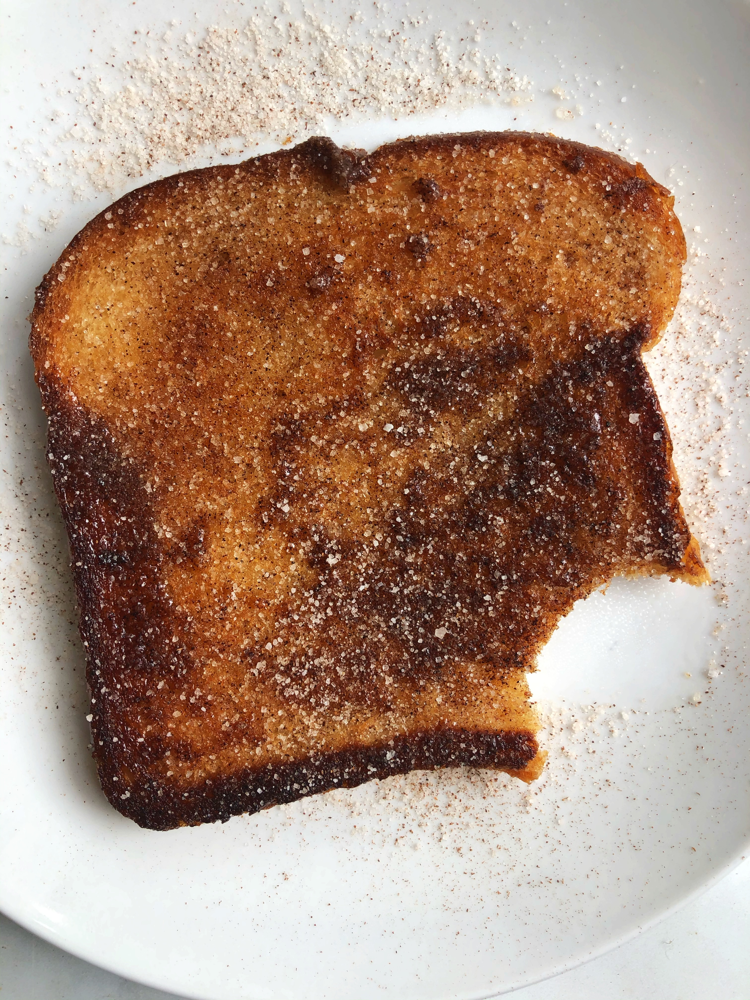

Bullet Proof Coffee

Description
Bullet proof coffee is a great way to upgrade your morning pick-me-up into your breakfast-in-a-cup.
Your basically transforming your coffee into a meal by adding beneficial fat calories via butter and/or coconut oil. The result is a keto-friendly drink that can keep your hunger satiated until lunchtime!
Ingredients
- Coffee
- Butter
- Coconut oil
- Cocoa power (optional)
Steps
- Mix equal parts cinnamon and sugar (1 tsp of each should suffice) into a small bowl. If you like, you can mix a larger amount and store in a dedicated shaker for convenient use in the future.
- Using a toaster or toaster oven, toast the bread to a golden brown.
- Quickly remove the bread from the toaster and generously apply butter; we want the heat of the toast to melt the butter.
- Using a spoon (or your shaker if you've prepared one), sprinkle the cinnamon-and-sugar-mixture all over the buttered surface of the toast. The topping should turn a dark brown as it absorbs into the butter.